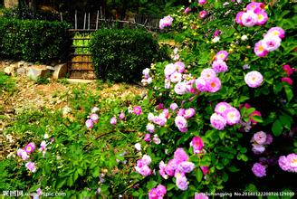
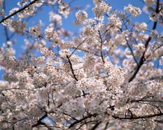

盼望着，盼望着，东风来了，春天的脚步近了。
一切都像刚睡醒的样子，欣欣然张开了眼。山朗润起来了，水涨起来了，太阳的脸红起来了。
从明天起，做一个幸福的人

小草偷偷地从土地里钻出来，嫩嫩的，绿绿的。园子里，田野里，瞧去，一大片一大片满是的。 坐着，躺着，打两个滚，踢几脚球，赛几趟跑，捉几回迷藏。风轻俏俏的，草软绵绵的。 桃树，杏树，梨树，你不让我，我不让你，都开满了花赶趟儿。红的像火，粉的像霞，白的像雪。
喂马、劈柴，周游世界

雨是最寻常的，一下就是三两天。可别恼。看，像牛牦，像花针，像细丝，密密的斜织着，人家屋顶上全笼着一层薄烟。树叶却绿得发亮，小草也青得逼你的眼。傍晚时候，上灯了，一点点黄晕的光，烘托出一片安静而和平的夜。在乡下，小路上，石桥边，有撑着伞慢慢走着的人，地里还有工作的农民，披着所戴着笠。他们的房屋稀稀疏疏的，在雨里静默着。
从明天起，关心粮食和蔬菜
天上的风筝渐渐多了，地上的孩子也多了。城里乡下，家家户户，老老小小，也赶趟似的，一个个都出来了。舒活舒活筋骨，抖擞抖擞精神，各做各的一份事儿去。“一年之计在于春”，刚起头儿，有的是功夫，有的是希望 春天像刚落地的娃娃，从头到脚都是新的，它生长着。
我有一所房子，面朝大海，春暖花开

春天像小姑娘，花枝招展的笑着走着。
春天像健壮的青年，有铁一般的胳膊和腰脚，领着我们向前去。
123
div中的p
section中的p1
section中的p2